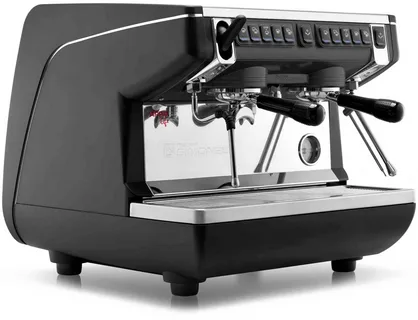
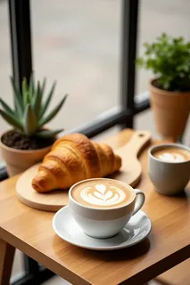

Искусство приготовления кофе
От зёрна до чашки — раскройте секреты профессионалов. Погрузитесь в мир ароматов, вкусов и техник заваривания.
Изучить методыПочему кофе — это искусство?
От терруара до обжарки — каждый этап влияет на вкус.
Выращивание
Арабика и робуста: разница в высоте, климате и вкусовых характеристиках.
Обжарка
Светлая, средняя, тёмная — от цветочных нот до насыщенной горечи.
Помол
Крупный для френч-пресса, мелкий для эспрессо — точность важна.
Заваривание
Вода, температура, время — магия превращения зёрен в напиток.
Популярные методы заваривания
Каждый способ раскрывает уникальный характер кофе.
Пуровер (V60)
Ручное капельное заваривание — чистый, прозрачный вкус с яркой кислотностью.
Для гурмановФренч-пресс
Полнотелый, маслянистый вкус с насыщенным ароматом. Просто и надёжно.
КлассикаТурка (джезва)
Насыщенный, пряный кофе по-восточному с гущей — традиция веков.
ЭтническийАэропресс
Быстрое заваривание под давлением — чистый и плотный вкус.
СовременныйКофе в кадре
Атмосфера, текстуры и моменты кофейного наслаждения.
.webp)
.webp)


Будьте на связи
Подпишитесь на нашу рассылку, чтобы получать советы бариста и новые рецепты.
- hello@coffee-expert.ru
- +7 (939)3630622
- @coffee_expert_project